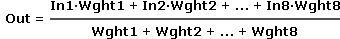
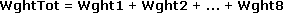
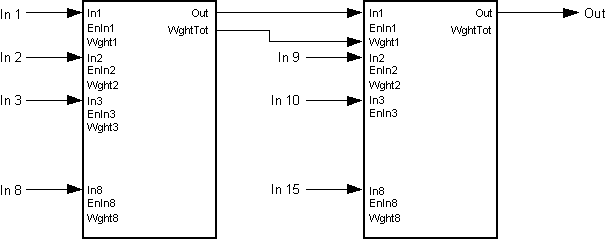

[AVRG] 8 个实数值的平均值
功能块 AVERAGE 计算 8 个实数值的平均值。
AVERAGE 根据 8 个实际值计算平均值。计算仅包括有效输入信号及其各自的权重。
通过级联多个AVERAGE功能块来处理8个以上的输入信号。
AVERAGE 根据最大值计算加权平均值 [Out]。 8 个输入 [In1]...[In8]，考虑其权重 [Wght1]...[Wght8] 并启用输入 1...8 [EnIn1]...[EnIn8]。
为了计算平均值，需要考虑所有未锁定的值，例如[EnIn1] = 1。因此，平均值 [Out] 是由所有未锁定的输入值乘以其权重得出的。

输出 [WghtTot] 提供所有未锁定输入的所有权重之和。

输入 | 描述 | 数据类型 | 默认值 |
|---|---|---|---|
In1…In8 | Input 1…Input 8 输入 1 用于计算平均值。 | 真实的 | 0.0 |
Wght1…Wght8 | Weighting 1…Weighting 8 用于按比例衡量输入 1 与其他输入的参数。 | 真实的 | 1.0 |
0.0：该输入无效。 | |||
EnIn1…EnIn8 | Enable input 1…Enable input 8 从平均中排除输入（例如错误的输入信号）。 如果输入用作参数（未接线），则必须设置 [EnIn] = 1（例如，无错误监控）。 | 布尔值 | 0 |
0 - 输入未使用。 | |||
输出 | 描述 | 数据类型 | 默认值 |
|---|---|---|---|
Out | Output | 真实的 | 0.0 |
WghtTot | Weighting total 所有未锁定输入值的加权值之和。 | 真实的 | 0.0 |
AVERAGE 通常用于对测量值求平均值。
由于并非所有输入值都按比例加权，因此可以选择加权因子：
- Averaging several room temperatures including room size.
- Averaging parallel sensors to increase measuring accuracy in large air ducts.
- Averaging parallel sensors to increase availability.
可以级联多个 AVERAGE 功能块来计算 8 个以上输入值的平均值。

为了计算，[Wght1]...[Wght8]（通过参数化）的负权重被它们的绝对值替换。替换值被重写到输入中。
如果有效输入的所有权重 [Wght1]...[Wght8] 之和为 0，则 [Out] = 0。
如果所有输入 [In1]...[In8] 均无效，即所有输入 [EnIn1]...[EnIn8] = 0，则 [Out] = 0。